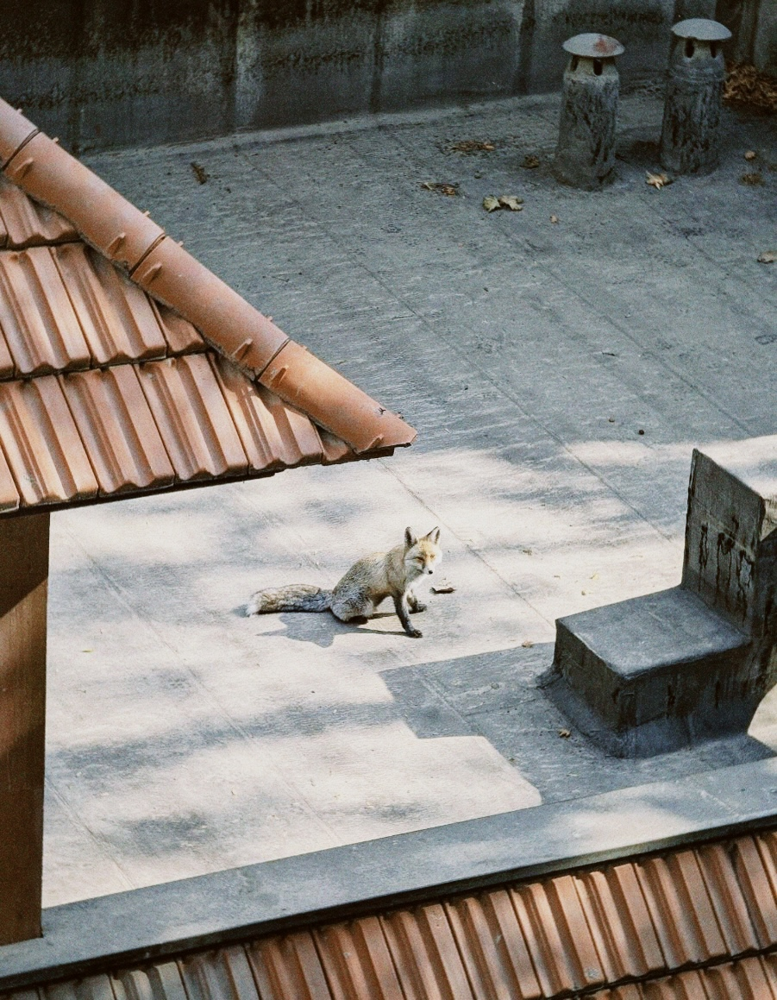

Tehran, 2024
A fox standing on a sunlit rooftop courtyard in Tehran, Iran, surrounded by tiled roofs, stone paving and small chimney vents.

A fox standing on a sunlit rooftop courtyard in Tehran, Iran, surrounded by tiled roofs, stone paving and small chimney vents.